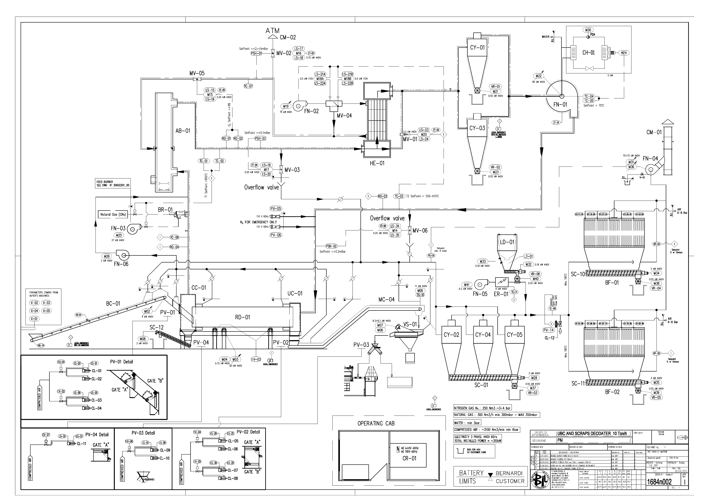

전체 설비 통합 매뉴얼 · 원본 래더 탐색기
프로젝트 목적과 작업 우선순위
이 프로젝트의 목적은 전체 설비 매뉴얼 작성, 고장 진단과 수리 지원, PLC 프로그램 구조 파악, 근거에 따른 개선 검토다. 2026-10-07 사용자가 확정한 목적을 기준으로 다음 작업을 진행한다.
- 매뉴얼: 설비 역할·운전 조건·점검 방법을 도면, I/O, HMI, 원본 래더와 연결한다.
- 진단·수리: 증상 → 확인 신호 → 관련 래더 → 도면·단자 → 조치 → 복구 검증의 순서로 안내한다.
- 프로그램 구조: OB·FC·FB·DB의 역할, 호출 조건, 읽기·쓰기 위치, 인터록, 타이머, 초기화 및 공통 기능을 분석한다.
- 개선 검토: 문제 후보별 근거, 현재 동작, 변경안, 영향 범위, 검증 방법과 복원 방법을 기록한다.
먼저 전체 설비 제어 명세를 작성하고, 프로그램 구조도와 고장 진단표를 연결한다. 전체 설비를 대상으로 분석하고, BC01 등 개별 장치에서 신호 추적 방식의 상세도를 확인한다. HMI는 자료 탐색과 진단의 진입점으로 사용하며, 시뮬레이터는 동작 이해·고장 재현·개선안 비교 검증을 지원한다.
현재 자료는 설비별 참조 목록과 정적 래더 조건을 제공한다. 블록 호출 관계, 신호를 쓰는 위치의 실행 우선순위, 단자별 진단 및 개선안 검증은 후속 작업으로 구분한다. 목적·산출물·작업 순서 상세 문서
주설비·계측·외부 연동·공통 기능 장
하위 구성품·펄스 밸브 장
원본 래더 네트워크
시뮬레이터 시험 설계
전체 설비 제어 명세 · 통합 Markdown 매뉴얼 · PLC 전체 네트워크 · PLC 전체 심볼 · HMI 전체 설정 · 설비 대장 CSV · 확인 대장 · 시험 설계 · 자료 불일치 대장
전체 설비 목록
전체 248개 항목
| ID | 설비명 | 영역 | 상위 | 자료 상태 | I/O | HMI | LAD |
|---|---|---|---|---|---|---|---|
| BC01 | 드럼 투입 컨베이어 | 원료 이송 | — | 자료에서 확인 | 5 | 3 | 15 |
| RD01 | 회전 드럼 | 원료 이송 | — | 자료에서 확인 | 6 | 8 | 23 |
| RD01-FAN | 드럼 모터 냉각팬 | 원료 이송 | RD01 | 자료에서 확인 | 2 | 3 | 10 |
| MC03 | 예비 모터 MC03 | 원료 이송 | — | 예비·실물 동일성 확인 | 2 | 0 | 7 |
| MC04 | 금속 컨베이어 | 원료 이송 | — | 자료에서 확인 | 4 | 3 | 15 |
| MC05 | 금속 컨베이어 MC05 | 원료 이송 | — | 삭제 제목·예비 여부 확인 | 3 | 3 | 3 |
| VS01 | 진동 스크린 | 원료 이송 | — | 자료에서 확인 | 4 | 3 | 11 |
| SC12 | 드럼 배출실 스크루 | 원료 이송 | — | SPARE·삭제 제목 | 2 | 3 | 1 |
| CC01 | 드럼 투입실 | 공정 본체 | — | 자료에서 확인 | 0 | 0 | 0 |
| UC01 | 드럼 배출실 | 공정 본체 | — | 자료에서 확인 | 0 | 0 | 0 |
| AB01 | 연소 챔버 | 연소·열회수 | — | 자료에서 확인 | 2 | 0 | 0 |
| BR01 | 가스 버너 | 연소·열회수 | — | 자료에서 확인 | 11 | 10 | 36 |
| HE01 | 열교환기 | 연소·열회수 | — | 자료에서 확인 | 0 | 0 | 0 |
| FN01 | 순환 블로어 | 연소·열회수 | — | 자료에서 확인 | 10 | 6 | 18 |
| FN02 | 열회수 블로어 | 연소·열회수 | — | 자료에서 확인 | 5 | 6 | 15 |
| FN03 | 연소 공기 블로어 | 연소·열회수 | — | 자료에서 확인 | 3 | 3 | 11 |
| FN04 | 집진 배기팬 | 집진·석회 | — | 자료에서 확인 | 6 | 5 | 20 |
| FN05 | 석회 계통 송풍기 | 집진·석회 | — | 자료에서 확인 | 2 | 3 | 7 |
| FN06 | 보조 블로어 | 연소·열회수 | — | 자료에서 확인 | 2 | 3 | 10 |
| FN01-FAN | FN01 모터 냉각팬 | 연소·열회수 | FN01 | SPARE·삭제 제목 | 2 | 0 | 2 |
| CH01 | 냉각기 | 연소·열회수 | — | 자료에서 확인 | 3 | 3 | 11 |
| MV01 | 모터 구동 밸브 | 제어 밸브 | — | 자료에서 확인 | 6 | 9 | 11 |
| MV02 | 모터 구동 밸브 | 제어 밸브 | — | 자료에서 확인 | 10 | 8 | 11 |
| MV03 | 모터 구동 밸브 | 제어 밸브 | — | 자료에서 확인 | 7 | 9 | 14 |
| MV04 | 모터 구동 밸브 | 제어 밸브 | — | 자료에서 확인 | 8 | 2 | 5 |
| MV05 | 모터 구동 밸브 | 제어 밸브 | — | 자료에서 확인 | 8 | 8 | 10 |
| MV06 | 모터 구동 밸브 | 제어 밸브 | — | 자료에서 확인 | 8 | 8 | 11 |
| PV01 | 공압 게이트/분기 밸브 | 공압 밸브 | — | 자료에서 확인 | 8 | 10 | 12 |
| PV02 | 공압 게이트/분기 밸브 | 공압 밸브 | — | 자료에서 확인 | 8 | 8 | 11 |
| PV03 | 공압 게이트/분기 밸브 | 공압 밸브 | — | 자료에서 확인 | 4 | 5 | 7 |
| PV04 | 공압 게이트/분기 밸브 | 공압 밸브 | — | 예비 표기·삭제 제목 | 4 | 5 | 3 |
| PV05 | 질소 주입 밸브 | 공압 밸브 | — | 자료에서 확인 | 2 | 0 | 2 |
| PV06 | 질소 주입 밸브 | 공압 밸브 | — | 자료에서 확인 | 2 | 0 | 2 |
| PV14 | 필터 냉풍 유입 밸브 | 공압 밸브 | — | 자료에서 확인 | 3 | 3 | 6 |
| CY01 | 사이클론 | 집진·석회 | — | 자료에서 확인 | 0 | 0 | 0 |
| CY02 | 사이클론 | 집진·석회 | — | 자료에서 확인 | 0 | 0 | 0 |
| CY03 | 사이클론 | 집진·석회 | — | 자료에서 확인 | 0 | 0 | 0 |
| CY04 | 사이클론 | 집진·석회 | — | 자료에서 확인 | 0 | 0 | 0 |
| CY05 | 사이클론 | 집진·석회 | — | 자료에서 확인 | 0 | 0 | 0 |
| VR01 | 로터리 밸브 | 집진·석회 | — | 자료에서 확인 | 2 | 3 | 10 |
| VR02 | 로터리 밸브 | 집진·석회 | — | 자료에서 확인 | 2 | 3 | 10 |
| VR03 | 로터리 밸브 | 집진·석회 | — | 자료에서 확인 | 2 | 3 | 11 |
| VR04 | 로터리 밸브 | 집진·석회 | — | 자료에서 확인 | 2 | 3 | 12 |
| VR05 | 로터리 밸브 | 집진·석회 | — | 자료에서 확인 | 2 | 3 | 12 |
| VR06 | 로터리 밸브 | 집진·석회 | — | 자료에서 확인 | 2 | 3 | 8 |
| SC01 | 사이클론 분진 스크루 | 집진·석회 | — | 자료에서 확인 | 2 | 3 | 9 |
| SC10 | BF01 분진 스크루 | 집진·석회 | — | 자료에서 확인 | 2 | 3 | 11 |
| SC11 | BF02 분진 스크루 | 집진·석회 | — | 자료에서 확인 | 2 | 3 | 11 |
| BF01 | 백 필터 | 집진·석회 | — | 자료에서 확인 | 12 | 1 | 11 |
| BF02 | 백 필터 | 집진·석회 | — | 자료에서 확인 | 11 | 1 | 11 |
| LD01 | 석회 마이크로피더 | 집진·석회 | — | 자료에서 확인 | 4 | 6 | 15 |
| LD01A | 석회 사일로 진동기 | 집진·석회 | LD01 | 자료에서 확인 | 2 | 0 | 6 |
| ER01 | 전기 히터 | 집진·석회 | — | 자료에서 확인 | 2 | 3 | 6 |
| CM01 | 집진 배기 스택 | 공정 본체 | — | 자료에서 확인 | 0 | 0 | 0 |
| CM02 | 상부 배기 스택 | 공정 본체 | — | 자료에서 확인 | 0 | 0 | 0 |
| CR01 | 운전 제어반 | 공정 본체 | — | 자료에서 확인 | 0 | 0 | 0 |
| BWF01 | 고객 설비 계량 피더 | 외부 연동 | — | 자료에서 확인 | 11 | 7 | 19 |
| BWF02 | 고객 설비 계량 피더 | 외부 연동 | — | 자료에서 확인 | 11 | 7 | 20 |
| LIW | 외부 LIW 피더 | 외부 연동 | — | 자료에서 확인 | 3 | 0 | 3 |
| CLIENT-CL01 | Apron conveyor A | 외부 연동 | — | 자료에서 확인 | 2 | 0 | 2 |
| CLIENT-CL02 | Impactor | 외부 연동 | — | 자료에서 확인 | 2 | 1 | 2 |
| CLIENT-CL03 | Impact vibration feeder | 외부 연동 | — | 자료에서 확인 | 2 | 0 | 2 |
| CLIENT-CL04 | Belt conveyor A | 외부 연동 | — | 자료에서 확인 | 3 | 0 | 2 |
| CLIENT-CL05 | Air knife | 외부 연동 | — | 자료에서 확인 | 2 | 0 | 2 |
| CLIENT-CL06 | Belt conveyor B | 외부 연동 | — | 자료에서 확인 | 3 | 0 | 2 |
| CLIENT-CL07 | Shredder 1 | 외부 연동 | — | 자료에서 확인 | 2 | 0 | 2 |
| CLIENT-CL08 | Shredder vibration feeder | 외부 연동 | — | 자료에서 확인 | 3 | 0 | 2 |
| CLIENT-CL09 | Belt conveyor C | 외부 연동 | — | 자료에서 확인 | 4 | 0 | 2 |
| CLIENT-CL10 | Rotex screen | 외부 연동 | — | 자료에서 확인 | 1 | 0 | 2 |
| CLIENT-CL13 | Apron conveyor B | 외부 연동 | — | 자료에서 확인 | 2 | 0 | 2 |
| CLIENT-CL14 | Shredder 2 | 외부 연동 | — | 자료에서 확인 | 1 | 0 | 2 |
| CLIENT-CL15 | Belt conveyor D | 외부 연동 | — | 자료에서 확인 | 1 | 0 | 2 |
| CLIENT-CL16 | Belt conveyor E | 외부 연동 | — | 자료에서 확인 | 2 | 0 | 2 |
| CLIENT-CL17 | Weighing hopper 2 | 외부 연동 | — | 자료에서 확인 | 1 | 0 | 2 |
| CLIENT-CL18 | Hopper conveyor 2 | 외부 연동 | — | 자료에서 확인 | 1 | 0 | 1 |
| CLIENT-CL19 | Primary shredder | 외부 연동 | — | 자료에서 확인 | 1 | 1 | 2 |
| TC01 | 온도 계측 | 계측 | — | 자료에서 확인 | 1 | 2 | 20 |
| TC02 | 온도 계측 | 계측 | — | 자료에서 확인 | 1 | 1 | 5 |
| TC03 | 온도 계측 | 계측 | — | 자료에서 확인 | 1 | 2 | 13 |
| TC04 | 온도 계측 | 계측 | — | 자료에서 확인 | 3 | 1 | 5 |
| TC05 | 온도 계측 | 계측 | — | 자료에서 확인 | 2 | 1 | 5 |
| TC06 | 온도 계측 | 계측 | — | 자료에서 확인 | 1 | 1 | 2 |
| TC07 | 온도 계측 | 계측 | — | 예비·운영 상태 확인 | 1 | 1 | 2 |
| TC09 | 온도 계측 | 계측 | — | 자료에서 확인 | 1 | 0 | 8 |
| TC10 | 온도 계측 | 계측 | — | 예비·운영 상태 확인 | 1 | 0 | 1 |
| TC11 | 온도 계측 | 계측 | — | P&ID 로컬 계측 | 0 | 0 | 0 |
| RO01 | 산소 분석 채널 | 계측 | — | 자료에서 확인 | 1 | 1 | 10 |
| RO02 | 산소 분석 채널 | 계측 | — | 자료에서 확인 | 1 | 1 | 4 |
| RO03 | 산소 분석 채널 | 계측 | — | 자료에서 확인 | 1 | 1 | 3 |
| RO04 | 산소 분석 채널 | 계측 | — | 자료에서 확인 | 1 | 1 | 2 |
| PSH01 | 압력 측정 채널 | 계측 | — | 자료에서 확인 | 1 | 2 | 3 |
| PSH02 | 압력 측정 채널 | 계측 | — | 자료에서 확인 | 1 | 2 | 6 |
| PSH03 | 압력 측정 채널 | 계측 | — | 자료에서 확인 | 1 | 1 | 4 |
| PC01 | 집진 흡인 압력 | 계측 | — | 자료에서 확인 | 1 | 1 | 6 |
| PC02 | 소프트웨어 압력 루프 명칭 | 계측 | — | 소프트웨어 명칭·물리 태그 확인 | 0 | 0 | 1 |
| DP01 | 백 필터 차압 | 계측 | — | 자료에서 확인 | 1 | 0 | 7 |
| DP02 | 백 필터 차압 | 계측 | — | 자료에서 확인 | 1 | 0 | 4 |
| ZT01 | FN01 진동 계측 | 계측 | — | SPARE·활성 조건 확인 | 1 | 1 | 4 |
| ZT02 | P&ID 밸브 위치 계측 | 계측 | MV01 | P&ID·현재 엔코더 동일성 확인 | 0 | 0 | 0 |
| ZT03 | P&ID 밸브 위치 계측 | 계측 | MV02 | P&ID·현재 엔코더 동일성 확인 | 0 | 0 | 0 |
| ZT04 | P&ID 밸브 위치 계측 | 계측 | MV03 | P&ID·현재 엔코더 동일성 확인 | 0 | 0 | 0 |
| ZT05 | P&ID 밸브 위치 계측 | 계측 | MV05 | P&ID·현재 엔코더 동일성 확인 | 0 | 0 | 0 |
| ZT06 | P&ID 밸브 위치 계측 | 계측 | MV06 | P&ID·현재 엔코더 동일성 확인 | 0 | 0 | 0 |
| LT01 | 석회 사일로 레벨 | 계측 | LD01 | 자료에서 확인 | 1 | 0 | 2 |
| SS01 | 이송 장치 감시 스위치 | 계측 | BC01 | 자료에서 확인 | 2 | 0 | 0 |
| SS09 | 이송 장치 감시 스위치 | 계측 | MC03 | 자료에서 확인 | 1 | 0 | 0 |
| SS10 | 이송 장치 감시 스위치 | 계측 | MC04 | 자료에서 확인 | 1 | 0 | 0 |
| SS11 | 이송 장치 감시 스위치 | 계측 | MC05 | 자료에서 확인 | 1 | 0 | 0 |
| PSL05 | 압축공기 저압 스위치 | 계측 | — | 자료에서 확인 | 1 | 0 | 2 |
| EV01 | 공압 솔레노이드 | 하위 구성품 | PV01 | 자료에서 확인 | 4 | 0 | 2 |
| EV02 | 공압 솔레노이드 | 하위 구성품 | PV01 | 자료에서 확인 | 4 | 0 | 3 |
| EV03 | 드럼 윤활 솔레노이드 | 하위 구성품 | RD01 | 자료에서 확인 | 1 | 2 | 3 |
| EV04 | 공압 솔레노이드 | 하위 구성품 | PV02 | 자료에서 확인 | 3 | 0 | 1 |
| EV05 | 공압 솔레노이드 | 하위 구성품 | PV02 | 자료에서 확인 | 3 | 0 | 2 |
| EV06 | 공압 솔레노이드 | 하위 구성품 | PV03 | 자료에서 확인 | 1 | 0 | 0 |
| EV07 | 공압 솔레노이드 | 하위 구성품 | PV04 | 자료에서 확인 | 1 | 0 | 0 |
| EV11 | 필터 펄스 세정 밸브 | 필터 세정 밸브 | BF01 | 자료에서 확인 | 1 | 0 | 1 |
| EV12 | 필터 펄스 세정 밸브 | 필터 세정 밸브 | BF01 | 자료에서 확인 | 1 | 0 | 1 |
| EV13 | 필터 펄스 세정 밸브 | 필터 세정 밸브 | BF01 | 자료에서 확인 | 1 | 0 | 1 |
| EV14 | 필터 펄스 세정 밸브 | 필터 세정 밸브 | BF01 | 자료에서 확인 | 1 | 0 | 1 |
| EV15 | 필터 펄스 세정 밸브 | 필터 세정 밸브 | BF01 | 자료에서 확인 | 1 | 0 | 1 |
| EV16 | 필터 펄스 세정 밸브 | 필터 세정 밸브 | BF01 | 자료에서 확인 | 1 | 0 | 1 |
| EV17 | 필터 펄스 세정 밸브 | 필터 세정 밸브 | BF01 | 자료에서 확인 | 1 | 0 | 1 |
| EV18 | 필터 펄스 세정 밸브 | 필터 세정 밸브 | BF01 | 자료에서 확인 | 1 | 0 | 1 |
| EV19 | 필터 펄스 세정 밸브 | 필터 세정 밸브 | BF01 | 자료에서 확인 | 1 | 0 | 1 |
| EV20 | 필터 펄스 세정 밸브 | 필터 세정 밸브 | BF01 | 자료에서 확인 | 1 | 0 | 1 |
| EV21 | 필터 펄스 세정 밸브 | 필터 세정 밸브 | BF01 | 자료에서 확인 | 1 | 0 | 1 |
| EV22 | 필터 펄스 세정 밸브 | 필터 세정 밸브 | BF01 | 자료에서 확인 | 1 | 0 | 1 |
| EV23 | 필터 펄스 세정 밸브 | 필터 세정 밸브 | BF01 | 자료에서 확인 | 1 | 0 | 1 |
| EV24 | 필터 펄스 세정 밸브 | 필터 세정 밸브 | BF01 | 자료에서 확인 | 1 | 0 | 1 |
| EV25 | 필터 펄스 세정 밸브 | 필터 세정 밸브 | BF01 | 자료에서 확인 | 1 | 0 | 1 |
| EV26 | 필터 펄스 세정 밸브 | 필터 세정 밸브 | BF01 | 자료에서 확인 | 1 | 0 | 1 |
| EV27 | 필터 펄스 세정 밸브 | 필터 세정 밸브 | BF01 | 자료에서 확인 | 1 | 0 | 1 |
| EV28 | 필터 펄스 세정 밸브 | 필터 세정 밸브 | BF01 | 자료에서 확인 | 1 | 0 | 1 |
| EV29 | 필터 펄스 세정 밸브 | 필터 세정 밸브 | BF01 | 자료에서 확인 | 1 | 0 | 1 |
| EV30 | 필터 펄스 세정 밸브 | 필터 세정 밸브 | BF01 | 자료에서 확인 | 1 | 0 | 1 |
| EV31 | 필터 펄스 세정 밸브 | 필터 세정 밸브 | BF01 | 자료에서 확인 | 1 | 0 | 1 |
| EV32 | 필터 펄스 세정 밸브 | 필터 세정 밸브 | BF01 | 자료에서 확인 | 1 | 0 | 1 |
| EV33 | 필터 펄스 세정 밸브 | 필터 세정 밸브 | BF01 | 자료에서 확인 | 1 | 0 | 1 |
| EV34 | 필터 펄스 세정 밸브 | 필터 세정 밸브 | BF01 | 자료에서 확인 | 1 | 0 | 1 |
| EV35 | 필터 펄스 세정 밸브 | 필터 세정 밸브 | BF01 | 자료에서 확인 | 1 | 0 | 1 |
| EV36 | 필터 펄스 세정 밸브 | 필터 세정 밸브 | BF01 | 자료에서 확인 | 1 | 0 | 1 |
| EV37 | 필터 펄스 세정 밸브 | 필터 세정 밸브 | BF01 | 자료에서 확인 | 1 | 0 | 1 |
| EV38 | 필터 펄스 세정 밸브 | 필터 세정 밸브 | BF01 | 자료에서 확인 | 1 | 0 | 1 |
| EV39 | 필터 펄스 세정 밸브 | 필터 세정 밸브 | BF01 | 자료에서 확인 | 1 | 0 | 1 |
| EV40 | 필터 펄스 세정 밸브 | 필터 세정 밸브 | BF01 | 자료에서 확인 | 1 | 0 | 1 |
| EV41 | 필터 펄스 세정 밸브 | 필터 세정 밸브 | BF01 | 자료에서 확인 | 1 | 0 | 1 |
| EV42 | 필터 펄스 세정 밸브 | 필터 세정 밸브 | BF01 | 자료에서 확인 | 1 | 0 | 1 |
| EV43 | 필터 펄스 세정 밸브 | 필터 세정 밸브 | BF01 | 자료에서 확인 | 1 | 0 | 1 |
| EV44 | 필터 펄스 세정 밸브 | 필터 세정 밸브 | BF01 | 자료에서 확인 | 1 | 0 | 1 |
| EV45 | 필터 펄스 세정 밸브 | 필터 세정 밸브 | BF01 | 자료에서 확인 | 1 | 0 | 1 |
| EV46 | 필터 펄스 세정 밸브 | 필터 세정 밸브 | BF01 | 자료에서 확인 | 1 | 0 | 1 |
| EV47 | 필터 펄스 세정 밸브 | 필터 세정 밸브 | BF01 | 자료에서 확인 | 1 | 0 | 1 |
| EV48 | 필터 펄스 세정 밸브 | 필터 세정 밸브 | BF01 | 자료에서 확인 | 1 | 0 | 1 |
| EV49 | 필터 펄스 세정 밸브 | 필터 세정 밸브 | BF01 | 자료에서 확인 | 1 | 0 | 1 |
| EV50 | 필터 펄스 세정 밸브 | 필터 세정 밸브 | BF01 | 자료에서 확인 | 1 | 0 | 1 |
| EV51 | 필터 펄스 세정 밸브 | 필터 세정 밸브 | BF02 | 자료에서 확인 | 1 | 0 | 1 |
| EV52 | 필터 펄스 세정 밸브 | 필터 세정 밸브 | BF02 | 자료에서 확인 | 1 | 0 | 1 |
| EV53 | 필터 펄스 세정 밸브 | 필터 세정 밸브 | BF02 | 자료에서 확인 | 1 | 0 | 1 |
| EV54 | 필터 펄스 세정 밸브 | 필터 세정 밸브 | BF02 | 자료에서 확인 | 1 | 0 | 1 |
| EV55 | 필터 펄스 세정 밸브 | 필터 세정 밸브 | BF02 | 자료에서 확인 | 1 | 0 | 1 |
| EV56 | 필터 펄스 세정 밸브 | 필터 세정 밸브 | BF02 | 자료에서 확인 | 1 | 0 | 1 |
| EV57 | 필터 펄스 세정 밸브 | 필터 세정 밸브 | BF02 | 자료에서 확인 | 1 | 0 | 1 |
| EV58 | 필터 펄스 세정 밸브 | 필터 세정 밸브 | BF02 | 자료에서 확인 | 1 | 0 | 1 |
| EV59 | 필터 펄스 세정 밸브 | 필터 세정 밸브 | BF02 | 자료에서 확인 | 1 | 0 | 1 |
| EV60 | 필터 펄스 세정 밸브 | 필터 세정 밸브 | BF02 | 자료에서 확인 | 1 | 0 | 1 |
| EV61 | 필터 펄스 세정 밸브 | 필터 세정 밸브 | BF02 | 자료에서 확인 | 1 | 0 | 1 |
| EV62 | 필터 펄스 세정 밸브 | 필터 세정 밸브 | BF02 | 자료에서 확인 | 1 | 0 | 1 |
| EV63 | 필터 펄스 세정 밸브 | 필터 세정 밸브 | BF02 | 자료에서 확인 | 1 | 0 | 1 |
| EV64 | 필터 펄스 세정 밸브 | 필터 세정 밸브 | BF02 | 자료에서 확인 | 1 | 0 | 1 |
| EV65 | 필터 펄스 세정 밸브 | 필터 세정 밸브 | BF02 | 자료에서 확인 | 1 | 0 | 1 |
| EV66 | 필터 펄스 세정 밸브 | 필터 세정 밸브 | BF02 | 자료에서 확인 | 1 | 0 | 1 |
| EV67 | 필터 펄스 세정 밸브 | 필터 세정 밸브 | BF02 | 자료에서 확인 | 1 | 0 | 1 |
| EV68 | 필터 펄스 세정 밸브 | 필터 세정 밸브 | BF02 | 자료에서 확인 | 1 | 0 | 1 |
| EV69 | 필터 펄스 세정 밸브 | 필터 세정 밸브 | BF02 | 자료에서 확인 | 1 | 0 | 1 |
| EV70 | 필터 펄스 세정 밸브 | 필터 세정 밸브 | BF02 | 자료에서 확인 | 1 | 0 | 1 |
| EV71 | 필터 펄스 세정 밸브 | 필터 세정 밸브 | BF02 | 자료에서 확인 | 1 | 0 | 1 |
| EV72 | 필터 펄스 세정 밸브 | 필터 세정 밸브 | BF02 | 자료에서 확인 | 1 | 0 | 1 |
| EV73 | 필터 펄스 세정 밸브 | 필터 세정 밸브 | BF02 | 자료에서 확인 | 1 | 0 | 1 |
| EV74 | 필터 펄스 세정 밸브 | 필터 세정 밸브 | BF02 | 자료에서 확인 | 1 | 0 | 1 |
| EV75 | 필터 펄스 세정 밸브 | 필터 세정 밸브 | BF02 | 자료에서 확인 | 1 | 0 | 1 |
| EV76 | 필터 펄스 세정 밸브 | 필터 세정 밸브 | BF02 | 자료에서 확인 | 1 | 0 | 1 |
| EV77 | 필터 펄스 세정 밸브 | 필터 세정 밸브 | BF02 | 자료에서 확인 | 1 | 0 | 1 |
| EV78 | 필터 펄스 세정 밸브 | 필터 세정 밸브 | BF02 | 자료에서 확인 | 1 | 0 | 1 |
| EV79 | 필터 펄스 세정 밸브 | 필터 세정 밸브 | BF02 | 자료에서 확인 | 1 | 0 | 1 |
| EV80 | 필터 펄스 세정 밸브 | 필터 세정 밸브 | BF02 | 자료에서 확인 | 1 | 0 | 1 |
| EV81 | 필터 펄스 세정 밸브 | 필터 세정 밸브 | BF02 | 자료에서 확인 | 1 | 0 | 1 |
| EV82 | 필터 펄스 세정 밸브 | 필터 세정 밸브 | BF02 | 자료에서 확인 | 1 | 0 | 1 |
| EV83 | 필터 펄스 세정 밸브 | 필터 세정 밸브 | BF02 | 자료에서 확인 | 1 | 0 | 1 |
| EV84 | 필터 펄스 세정 밸브 | 필터 세정 밸브 | BF02 | 자료에서 확인 | 1 | 0 | 1 |
| EV85 | 필터 펄스 세정 밸브 | 필터 세정 밸브 | BF02 | 자료에서 확인 | 1 | 0 | 1 |
| EV86 | 필터 펄스 세정 밸브 | 필터 세정 밸브 | BF02 | 자료에서 확인 | 1 | 0 | 1 |
| EV87 | 필터 펄스 세정 밸브 | 필터 세정 밸브 | BF02 | 자료에서 확인 | 1 | 0 | 1 |
| EV88 | 필터 펄스 세정 밸브 | 필터 세정 밸브 | BF02 | 자료에서 확인 | 1 | 0 | 1 |
| EV89 | 필터 펄스 세정 밸브 | 필터 세정 밸브 | BF02 | 자료에서 확인 | 1 | 0 | 1 |
| EV90 | 필터 펄스 세정 밸브 | 필터 세정 밸브 | BF02 | 자료에서 확인 | 1 | 0 | 1 |
| CYL-CL01 | 공압 실린더 | 하위 구성품 | PV01 | 자료에서 확인 | 0 | 0 | 0 |
| CYL-CL02 | 공압 실린더 | 하위 구성품 | PV01 | 자료에서 확인 | 0 | 0 | 0 |
| CYL-CL03 | 공압 실린더 | 하위 구성품 | PV01 | 자료에서 확인 | 0 | 0 | 0 |
| CYL-CL04 | 공압 실린더 | 하위 구성품 | PV01 | 자료에서 확인 | 0 | 0 | 0 |
| CYL-CL05 | 공압 실린더 | 하위 구성품 | PV02 | 자료에서 확인 | 0 | 0 | 0 |
| CYL-CL06 | 공압 실린더 | 하위 구성품 | PV02 | 자료에서 확인 | 0 | 0 | 0 |
| CYL-CL07 | 공압 실린더 | 하위 구성품 | PV02 | 자료에서 확인 | 0 | 0 | 0 |
| CYL-CL08 | 공압 실린더 | 하위 구성품 | PV02 | 자료에서 확인 | 0 | 0 | 0 |
| CYL-CL09 | 공압 실린더 | 하위 구성품 | PV03 | 자료에서 확인 | 0 | 0 | 0 |
| CYL-CL10 | 공압 실린더 | 하위 구성품 | PV03 | 자료에서 확인 | 0 | 0 | 0 |
| CYL-CL11 | 공압 실린더 | 하위 구성품 | PV04 | 자료에서 확인 | 0 | 0 | 0 |
| CYL-CL12 | 공압 실린더 | 하위 구성품 | PV14 | 자료에서 확인 | 0 | 0 | 0 |
| LS01 | 밸브 위치 리미트 스위치 | 하위 구성품 | PV01 | P&ID/전기/백업 번호 대조 | 1 | 0 | 0 |
| LS02 | 밸브 위치 리미트 스위치 | 하위 구성품 | PV01 | P&ID/전기/백업 번호 대조 | 1 | 0 | 3 |
| LS05 | 밸브 위치 리미트 스위치 | 하위 구성품 | PV01 | P&ID/전기/백업 번호 대조 | 1 | 0 | 0 |
| LS06 | 밸브 위치 리미트 스위치 | 하위 구성품 | PV01 | P&ID/전기/백업 번호 대조 | 1 | 0 | 3 |
| LS09 | 밸브 위치 리미트 스위치 | 하위 구성품 | PV03 | P&ID/전기/백업 번호 대조 | 1 | 0 | 0 |
| LS10 | 밸브 위치 리미트 스위치 | 하위 구성품 | PV03 | P&ID/전기/백업 번호 대조 | 1 | 0 | 0 |
| LS15 | 밸브 위치 리미트 스위치 | 하위 구성품 | MV05 | P&ID/전기/백업 번호 대조 | 1 | 0 | 0 |
| LS16 | 밸브 위치 리미트 스위치 | 하위 구성품 | MV05 | P&ID/전기/백업 번호 대조 | 1 | 0 | 0 |
| LS17 | 밸브 위치 리미트 스위치 | 하위 구성품 | MV02 | P&ID/전기/백업 번호 대조 | 1 | 0 | 0 |
| LS18 | 밸브 위치 리미트 스위치 | 하위 구성품 | MV02 | P&ID/전기/백업 번호 대조 | 1 | 0 | 0 |
| LS19 | 밸브 위치 리미트 스위치 | 하위 구성품 | MV03 | P&ID/전기/백업 번호 대조 | 1 | 0 | 0 |
| LS20 | 밸브 위치 리미트 스위치 | 하위 구성품 | MV03 | P&ID/전기/백업 번호 대조 | 1 | 0 | 0 |
| LS21A | 밸브 위치 리미트 스위치 | 하위 구성품 | MV04 | P&ID/전기/백업 번호 대조 | 1 | 0 | 0 |
| LS21B | 밸브 위치 리미트 스위치 | 하위 구성품 | MV04 | P&ID/전기/백업 번호 대조 | 1 | 0 | 0 |
| LS22A | 밸브 위치 리미트 스위치 | 하위 구성품 | MV04 | P&ID/전기/백업 번호 대조 | 1 | 0 | 0 |
| LS22B | 밸브 위치 리미트 스위치 | 하위 구성품 | MV04 | P&ID/전기/백업 번호 대조 | 1 | 0 | 0 |
| LS23 | 밸브 위치 리미트 스위치 | 하위 구성품 | MV01 | P&ID/전기/백업 번호 대조 | 1 | 0 | 0 |
| LS24 | 밸브 위치 리미트 스위치 | 하위 구성품 | MV01 | P&ID/전기/백업 번호 대조 | 1 | 0 | 0 |
| LS25 | 밸브 위치 리미트 스위치 | 하위 구성품 | PV02 | P&ID/전기/백업 번호 대조 | 1 | 0 | 0 |
| LS26 | 밸브 위치 리미트 스위치 | 하위 구성품 | PV02 | P&ID/전기/백업 번호 대조 | 1 | 0 | 0 |
| LS29 | 밸브 위치 리미트 스위치 | 하위 구성품 | PV02 | P&ID/전기/백업 번호 대조 | 1 | 0 | 0 |
| LS30 | 밸브 위치 리미트 스위치 | 하위 구성품 | PV02 | P&ID/전기/백업 번호 대조 | 1 | 0 | 0 |
| LS32 | 밸브 위치 리미트 스위치 | 하위 구성품 | PV04 | P&ID/전기/백업 번호 대조 | 1 | 0 | 0 |
| LS33 | 밸브 위치 리미트 스위치 | 하위 구성품 | PV04 | P&ID/전기/백업 번호 대조 | 1 | 0 | 0 |
| LS34 | 밸브 위치 리미트 스위치 | 하위 구성품 | MV06 | P&ID/전기/백업 번호 대조 | 0 | 0 | 0 |
| LS35 | 밸브 위치 리미트 스위치 | 하위 구성품 | MV06 | P&ID/전기/백업 번호 대조 | 0 | 0 | 0 |
| LS40 | 밸브 위치 리미트 스위치 | 하위 구성품 | MV06 | P&ID/전기/백업 번호 대조 | 1 | 0 | 0 |
| LS41 | 밸브 위치 리미트 스위치 | 하위 구성품 | MV06 | P&ID/전기/백업 번호 대조 | 1 | 0 | 0 |
| SYS-POWER | 주전원·보조전원·제어반 | 공통 시스템 | — | 자료에서 확인 | 1 | 0 | 1 |
| SYS-SAFETY | 비상정지·일반 안전 회로 | 공통 시스템 | — | 자료에서 확인 | 3 | 0 | 40 |
| SYS-PLC-IO | CPU·분산 I/O·신호 변환 | 공통 시스템 | — | 자료에서 확인 | 0 | 0 | 84 |
| SYS-HMI | HMI·통신·가공 상태 | 공통 시스템 | — | 자료에서 확인 | 0 | 0 | 54 |
| SYS-ALARM | 알람·경광등·사이렌·Reset | 공통 시스템 | — | 자료에서 확인 | 4 | 1 | 98 |
| SYS-AUTO | 자동 기동·정지·유지보수 | 공통 시스템 | — | 자료에서 확인 | 0 | 2 | 37 |
| SYS-PID | 온도·압력·산소·비율 제어 | 공통 시스템 | — | 자료에서 확인 | 0 | 2 | 52 |
| SYS-RECIPES | 레시피·설정값 관리 | 공통 시스템 | — | 자료에서 확인 | 0 | 4 | 1 |
| SYS-SIMULATION | 기존 시험·시뮬레이션 블록 | 공통 시스템 | — | 자료에서 확인 | 0 | 0 | 42 |
| SYS-RUNHOURS | 모터 운전시간·정비 이력 | 공통 시스템 | — | 자료에서 확인 | 0 | 0 | 56 |
| SYS-COUNTERS | 생산량·가스·유량 계수 | 공통 시스템 | — | 자료에서 확인 | 0 | 5 | 54 |
| SYS-LEGACY | 과거 태그·이름 대응 | 공통 시스템 | — | 자료에서 확인 | 0 | 0 | 8 |
자료와 적용 범위
사용자가 제공한 P&ID·전기도면과 GitHub 프로젝트의 PLC 백업·기존 홈페이지 자료를 함께 정리한 전체 설비 검토본이다. 물리 설비, 외부 연동, 계측, 예비 장치 및 하위 구성품을 모두 목록에 포함했다. 자료에서 식별한 항목의 범위를 말하며 현장 전체 실물의 최종 인수 목록은 아니다.
P&ID: 1684n002 Rev.I, 2013년. 전기: IMPIANTO COREA DEFINITIVO REVISIONE 2, 265페이지. PLC: GME_20250506.zap18 내부 GME_20250605.ap18, V18.0.1.0. GitHub 분석 기준: 2ebff1273f586f3355a2ba8fb91d701ac94e4a5e. HMI: InTouch dde.cfg 782개 설정 및 DECOATER 화면.
백업 원본 래더를 읽은 방법
ZAP18에서 원본 PEData.plf를 읽고 압축된 XML 조각과 분할 스트림을 복원했다. 살아 있는 검색 색인의 객체 키를 PLF와 대조하여 426개 LAD 네트워크를 각각 다른 원본 FlgNet XML에 연결했다. 접점·Negated 핀·Coil/SCoil/RCoil/SdCoil·블록·Wire 구조를 읽을 수 있다.
검색 코드에 나타나는 이름과 원본 식별 선언의 UID/RID 및 내부 NID가 일치하는 참조만 이름을 붙였다. 상수는 UID/RID/NID와 인접 선언·검색 값이 일치하면 후보 이름을 붙이고 해석 방법을 별도 표시했다. 미해석 RefId는 원본 선언 파일에 보존했다. Contact·O/A·비교기 경로를 펼친 조건식은 정적 읽기 보조 자료이며 실행 엔진으로 사용하지 않는다. 연결도는 XML 구조를 다시 그린 것이다. TIA 프로젝트 복원·컴파일·PLC 현재 프로그램 비교 또는 실제 제어 실행은 아직 수행하지 않았다.
설비별 매뉴얼을 읽는 순서
- 설비 ID와 도면·자료 상태를 확인한다. 동일 CL 번호의 실린더와 외부 모터는 다른 ID를 사용한다.
- 물리 I/O와 HMI 주소를 분리해 읽고 현재 Address와 옛 주석 주소를 비교한다.
- 관련 원본 래더의 부품표와 Wire 표에서 접점 극성·분기·Set/Reset·시간/상수 연결을 확인한다.
- 알람·설정값과 설비 유형별 진단 절차를 검토한다.
- 시뮬레이터 시험 설계를 원본 동작과 대조해 기대 결과를 확정하고 확인 대장에 실행 증거를 남긴다.
공통 운전·작업 기록
자동 기동·정지 순서는 Auto start motors, Main, Motors 1, Burner control, Filter, R1 scraps gate 2, Valve control loop 및 주기 OB를 함께 읽는다. 검색 목록의 줄 순서를 실제 운전 순서로 사용하지 않는다. 같은 신호가 여러 네트워크에서 갱신될 때 호출 조건·주기·쓰기 순서를 확인한다.
작업 전에는 장치 ID·현재 운전 모드·활성 요청·알람·상위/하위 설비·해당 전기 회로·사용 프로젝트를 기록한다. 물리 배선 또는 기계 점검은 현장 작업 절차에 따라 에너지를 격리하고 잔류 공압·열·회전 상태를 확인한 뒤 수행한다. 복귀는 배선/기구 상태 확인, 전원·공기 복구, 알람 원인 해소, Reset, 요청 상태 확인, 제한 운전 검증을 각각 기록한다.
이력은 설비 ID, 시각, 도면 FG/PDF 페이지, 네트워크 ID, 요청/허가/출력/피드백/알람의 전후 값, 실제 단자·계측 결과, 증거 사진, 조치와 검증자로 구성한다. 백업에는 프로젝트·자료 해시와 변경 이유를 남겨 원본과 개정본을 함께 추적한다.
매뉴얼·수리·프로그램 분석과 개선을 위한 구현 기준
이번 결과물은 매뉴얼·원본 탐색기·CSV/JSON 대장이다. 운전 시뮬레이터 실행 엔진이나 실제 PLC 통신 제어 기능은 아직 구현하지 않았다. 다음 구현은 설비 ID를 중심으로 원본 도면, I/O, HMI, 알람, 작업 이력과 시험 결과를 연결한다.
- 자료 계층: 원본 파일 해시, 개정, 전기 FG/PDF 매핑, 네트워크 객체 키, 확인 상태를 보존한다.
- 장치 계층: 물리 입력·명령 출력·내부 기억·가공 HMI·설정·알람을 별도 필드로 저장한다.
- 시뮬레이터 계층: 스캔마다 입력 샘플링, 원본 조건 평가, 내부 상태·타이머 갱신, 출력 갱신, 장치 응답 모델, HMI 상태를 순서대로 기록한다. 주기 OB·Set/Reset·중복 쓰기와 재시작 초기화도 모델링한다.
- HMI 계층: 기존 DECOATER 배치를 참조하고 설비 클릭 시 주소·원본 로직·알람 원인·도면·점검 기록을 연결한다. 교육용 공정 가정과 원본 PLC 동작의 검증 상태를 표시한다.
- 시험 계층: 각 시험의 입력·시간·기대 결과·관찰 결과·근거 네트워크·모델 버전을 저장한다. 결과가 미실행인 경우 합격으로 표시하지 않는다.
- 현장 연동: 주소·자료형·실제 CPU 프로그램과 통신 계약을 검증한 뒤 읽기 화면 및 제어 기능을 단계별로 검토한다.
자료 불일치와 현장 확인 항목
| ID | 항목 | 자료 내용 | 다음 검증 |
|---|---|---|---|
| BASELINE | 백업 파일명과 내부 프로젝트 날짜 | GME_20250506.zap18 내부 GME_20250605.ap18; 2026-10-01은 보관 일자 | 온라인 PLC 및 현재 엔지니어링 프로젝트와 비교 |
| POWER | 설치 전력·도면 세대 | 2013 P&ID 355kW / 2024~2025 전기 463kW | 설치·개조 내역과 명판 기준 확정 |
| VOLTAGE | 주전원 표기 | 전기 표지 440Vac / 일부 인덱스 제목 400V | 현장 공급 및 실제 회로/명판 확인 |
| PV01-LS02 | 닫힘 센서 예비 표기 | FG70에 LS02, PLC I8.7, FG124 SPARE 표기 | 단자와 현재 입력 채널 실제 사용 확인 |
| ADDRESS | 현재 주소와 과거 주석 | 심볼 Address와 설명에 남은 옛 E/A 주소가 다름 | Address 및 실제 모듈/배선으로 대조 |
| MC05-SC12-PV04 | 삭제/예비 및 잔존 I/O | 도면/심볼에는 존재, Motors 1 일부 deleted 제목 | 실물·현재 네트워크·사용 상태 확정 |
| FN01-FAN | 냉각팬 삭제/예비 | FG54 SPARE, I4.5/Q3.5 잔존 | 현재 연결 및 필요성 확인 |
| MV04-MC04 | 아날로그 입력 목적 충돌 | MV04 위치 M18A/IW324를 MC04 전류 변환에서 참조 | 현장 배선·모듈 채널·사용 프로그램 목적 확인 |
| FN04 | 실구동 출력 및 제목 | Q17.1 start fn04 / Q4.2 옛 FN04 주석; 변환 제목 FN02 | 사용처와 전기도면 기준 현재 채널 확인 |
| MV06-LS | 리미트 번호 변경 | P&ID LS34/35 / 백업 LS40/41 | 변경 이력과 실제 센서/단자 확인 |
| CL-NAMESPACE | 같은 CL 번호의 다른 장치 | P&ID 실린더 CL01~12 / 외부 모터 CL01~19 일부 채널 | CYL-CL / CLIENT-CL ID 유지 |
| TC05 | 베어링 채널·범위 문구 | TC04/TC05·범위 설명 혼재 | 전송기 범위와 AI 채널/환산 계수 확인 |
| RO03 | 산소 대체 계산 | 실제 입력 외 RO02+11 참조 | 원본 분기·시험 비트·현재 값 확인 |
| BF02-DP | 차압 계수 이름 | DP02와 DP01 임계값 참조 혼재 | 공용 설정 의도와 실제 적용 확인 |
| CLIENT19 | 고장/운전 신호 의미 | Primaryshredder run을 fault 알람에 연결 | 외부 신호 정상 극성과 원본 접점 확인 |
| BR01 | 버너 상세 도면 경계 | P&ID에서 버너 별도 DWG 참조 | 제조사 버너 도면/안전 제어 순서 확보 |
| SOURCE-XML | 복원 해석과 TIA 결과 | 426 LAD 원본 XML 복원; 상수/일부 참조 이름 미해석 | TIA에서 프로젝트 복원·블록 비교·컴파일·오프라인 실행 검증 |
| PID-TM | 과거 위치 계측과 현재 엔코더 | P&ID ZT02~06 / TM·엔코더 카운트 사용 | 실제 위치 계측 방식/보정 절차 확인 |
기본 HMI와 공정 배치


